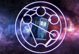
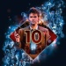
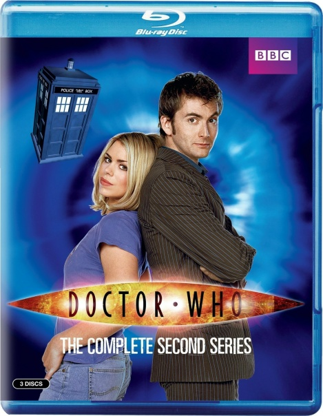
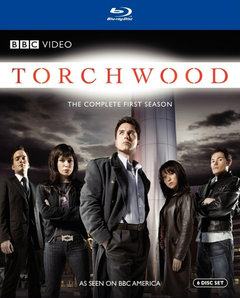
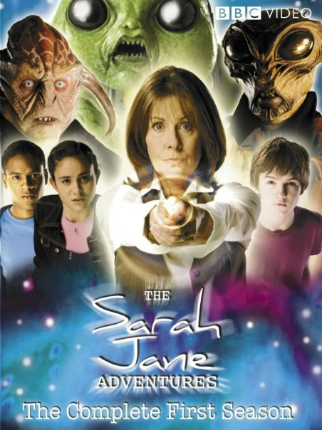
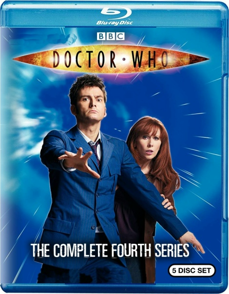

Таблица коллекции |  Навигация по канону |  Связные экранизации |


Новая эра (Ньюскул) с 2005 по 2022:


Перезапуск (Whoniverse) с 2023:


----


Эра Десятого Доктора
Актёр: Дэвид Теннант
Первое появление в:
- (2005) 1 сезон, 13 серия: Пути расходятся (небольшое появление)
|💽 Мини-эпизод: Заново рождённый (2005)
| 🎬Рождественское вторжение (спецвыпуск) (2005)
Доктор Кто - 🔻2 сезон (2006)🔻


Дебют Дэвида Теннанта: обаятельный, быстрый, с тёмной стороной. Роза остаётся, но параллельные миры и киберармия ставят вопрос о цене привязанности, а финал разводит их навсегда.
2. Клык и коготь (Tooth and Claw)
3. Школьное воссоединение (School Reunion)
4. Девушка в камине (The Girl in the Fireplace)
╔5. Восстание киберлюдей (Rise of the Cybermen)
╚6. Век стали (The Age of Steel)
7. Зомбоящик (The Idiots Lantern)
╔8. Невозможная планета (The Impossible Planet)
╚9. Бездна Сатаны (The Satan Pit)
10. Любовь и монстры (Love & Monsters)
11. Бойся её (Fear Her)
╔12. Армия призраков (Army of Ghosts)
╚13. Судный день (Doomsday)
Наш плейлист сезона в ВК
👽Торчвуд - 1 сезон (2006-2007) Спин-офф


Команда охотников за пришельцами в Кардиффе: жёстче и взрослее «Доктора Кто». Джек Харкнесс ведёт команду с нечистого прошлого.
Доктор Кто - 🔻3 сезон (2007)🔻

Марта Джонс вступает как спутница, Мастер возвращается как главный антагонист. Сезон исследует одиночество Доктора и цену героизма.
2. Код Шекспира (The Shakespeare Code)
3. Пробка (Gridlock)
╔4. Далеки на Манхэттене (Daleks in Manhattan)
╚5. Эволюция далеков (Evolution of the Daleks)
6. Эксперимент Лазаруса (The Lazarus Experiment)
7. 42 (42)
╔8. Человеческая природа (Human Nature)
╚9. Семья крови (The Family of Blood)
10. Не моргай (Blink)
╔11. Утопия (Utopia)
╠12. Барабанная дробь (The Sound of Drums)
╚13. Последний повелитель времени (Last of the Time Lords)
👩🦰Приключения Сары Джейн - 1 сезон (2007) Спин-офф


Детский спин-офф с сердцем и моралью: Сара Джейн и подростки защищают Землю от инопланетных угроз.
| 🎬Путешествие проклятых (спецвыпуск) (2007)
👽Торчвуд - 2 сезон (2008) Спин-офф

Баланс между монстром недели и сквозной аркой крепнет, прошлое Джека раскрывается глубже. Трагедия финала меняет команду навсегда.
Доктор Кто - 🔻4 сезон (2008)🔻


Донна Ноубл: дружба без романтики, чистая химия. Даврос возвращается, и финал ставит вопрос о границах милосердия.
2. Огни Помпеи (The Fires of Pompeii)
3. Планета удов (Planet of the Ood)
╔4. План сонтаранцев (The Sontaran Stratagem)
╚5. Отравленное небо (The Poison Sky)
6. Дочь Доктора (The Doctors Daughter)
7. Единорог и оса (The Unicorn and the Wasp)
╔8. Тишина в библиотеке (Silence in the Library)
╚9. Лес мертвецов (Forest of the Dead)
10. Полночь (Midnight)
11. Поверни налево (Turn Left)
╔12. Украденная Земля (The Stolen Earth)
╚13. Конец путешествия (Journeys end)
👩🦰Приключения Сары Джейн - 2 сезон (2008) Спин-офф

Команда крепнет, появляется кроссовер-связь с основным сериалом. Тон чуть серьёзнее, ставки выше.
| 🎬Планета мёртвых (спецвыпуск) (2009)
👽Торчвуд - 3 сезон (2009) Дети Земли Спин-офф

Пять серий, один напряжённый триллер о сделке правительства с пришельцами. Самый мрачный и мощный сезон спин-оффа.
👩🦰Приключения Сары Джейн - 3 сезон (2009) Спин-офф

Баланс между приключением и драмой оттачивается. Появление нового персонажа расширяет динамику команды.
* 5-минутный эпизод вышедший 13 марта 2009 года как часть благотворительной передачи Comic Relief
---
| 🎬Конец времени (спецвыпуски) (2009-2010)
----
Также появляется в:
- (2013) 7 сезон, 13 серия: Имя Доктора (небольшое появление)
- (2013) Спецвыпуск: День Доктора